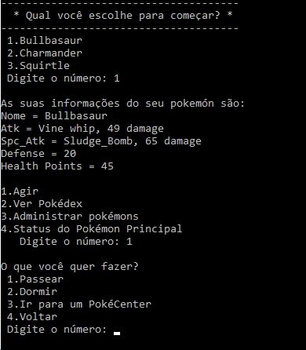

Inspermon - 1° Semestre (2017.1)
Design de Software - Professor Romero T.
Proposta:
Os alunos receberam a proposta de programar, em Python, um jogo de lógica semelhante ao mundialmente famoso Pokemon, em que mascotes batalham por intermédio de pontos de ataque, defesa e vida, batalhas essas divididas em turnos. Após a implementação da lógica principal do jogo, sugestões de aprimoramento do programa deveriam também ser implementadas.
Objetivos:
Como descrito na Proposta, o jogo seria baseado num jogo mundialmente famoso, no qual o usuário tem sempre que escolher entre passear com o seu inspermon (e batalhar), ou dormir (ir para o menu principal). Caso o usuário quisesse passear, ele encontraria inspermons adversários aleatoriamente. Quando em batalha, o jogador iria receber a situação de saúde de seu inspermon e a de seu adversário e, por fim, o vencedor da batalha. Caso o jogador perdesse, ele não conseguiria batalhar até restaurar sua vida.
Outras iterações seriam implementadas ao código do jogo, ao longo do andamento do projeto.
Conteúdo trabalhado:
- Lógica e Desenvolvimento de Programas → Python
Resultados:
Após implementadas a lógica principal do jogo, os alunos partiram para iterações:
- A criação de uma Insperdex (o jogador poderá jogar com qualquer Inspermon o qual vencer em batalha);
- O jogador terá a possibilidade de desistir da batalha em seu turno;
- O jogador poderá escolher qual o ataque deseja utiliza;
- Para tornar o jogo mais dinâmico, um elemento sorte afetará a eficácia dos ataques do jogador e do adversário;
- O jogo poderá ser salvado, assim, o jogador poderá continuar com os mesmos Inspermons, a partir do ponto salvo;
Sendo assim, chegou-se a um jogo no qual o usuário poderá realizar os comandos descritos nas seções anteriores e, salvar o seu progresso.
Voltar